Byg og forstå din egen netværks-stack fra
bunden:
DNS, TCP, HTTP og HTTPS i en IT-sikkerhedskontekst
28. september 2026
Opgavebeskrivelsen forudsætter en Linux-VM fra Linux Basics-forløbet.
Jeg arbejder i stedet direkte på min CachyOS-maskine, som allerede er et
Linux-system. Al trafik i opgaven forbliver på loopback-interfacet
(127.0.0.1), så en VM ville ikke give andre protokoller
eller andre capture-resultater.
(Afsnittet udbygges med konkrete afvigelser fra opgaven, efterhånden som de opstår.)
Netværkslag/
├── report/ (denne rapport: kildefiler + byggescript)
├── modul1-tcp/ (kildekode)
├── modul2-dns/
├── modul3-http/
├── modul4-tls/
└── modul5-integration/At forstå, hvordan pålidelig, forbindelsesorienteret kommunikation fungerer under HTTP, ved selv at bygge en simpel TCP-klient og -server og observere forbindelsen i Wireshark.
netstat og ss giver kun
mening, hvis man forstår de underliggende forbindelsestilstande
(LISTEN, ESTAB, TIME-WAIT).Serveren og klienten er skrevet med Pythons indbyggede
socket-modul, uden højniveaubiblioteker. Koden ligger i modul1-tcp/.
| Valg | Begrundelse |
|---|---|
HOST = "127.0.0.1" |
Serveren lytter kun på loopback. 0.0.0.0 ville betyde
“alle netværksinterfaces” og eksponere tjenesten for andre
maskiner. |
PORT = 9000 |
8080 er reserveret til HTTP-serveren i modul 3. |
SO_REUSEADDR |
Uden den fejler en hurtig genstart af serveren med “Address already
in use”, mens den gamle forbindelse står i TIME_WAIT. |
if not data: break |
recv() returnerer tom bytes (b''), når
klienten har lukket sin side af forbindelsen (sendt FIN). Det er
serverens signal til at lukke. |
with-blokke |
Sockets lukkes altid, også hvis noget fejler undervejs. |
encode() / decode() |
Sockets sender og modtager bytes, ikke tekststrenge. |
Serveren kalder socket(), bind(),
listen() og derefter accept() i en løkke.
accept() blokerer, indtil en klient forbinder, og
returnerer et nyt socket til netop den forbindelse. Klienten kalder
socket() og connect(). Det er
connect(), der udløser TCP’s three-way handshake.
Wireshark og tshark viser hver pakke på en linje med en
række felter og indstillinger. Nedenfor en kort forklaring af dem, der
optræder i captures i dette modul.
| Flag | Betydning |
|---|---|
SYN |
Synchronize: starter en forbindelse og synkroniserer sekvensnumre. |
ACK |
Acknowledge: bekræfter modtagelse. Sat på næsten alle pakker efter den første. |
PSH |
Push: afsenderen beder modtageren aflevere dataene til programmet med det samme, uden at vente på mere. |
FIN |
Finish: afsenderen har ikke mere at sende og lukker sin side af forbindelsen. |
RST |
Reset: afbryder forbindelsen brat, fx hvis en pakke rammer en lukket port. |
| Felt | Betydning |
|---|---|
Seq |
Sekvensnummer: nummeret på pakkens første byte i afsenderens datastrøm. Wireshark viser som standard relative numre, så de starter ved 0. SYN og FIN tæller hver som ét nummer. |
Ack |
Bekræftelsesnummer: det næste sekvensnummer, modtageren forventer.
Ack=20 betyder “jeg har modtaget alt til og med byte
19”. |
Len |
Antal bytes data i pakken (uden TCP-headeren). Len=0 er
en ren kontrolpakke. |
Win |
Window: hvor mange bytes modtageren aktuelt har plads til at modtage, før afsenderen skal vente på en bekræftelse. Styrer hastigheden (flowkontrol). |
Disse indstillinger sendes kun i de to første pakker i handshaken (SYN og SYN, ACK), hvor de to parter aftaler, hvad de begge understøtter.
| Indstilling | Betydning |
|---|---|
MSS |
Maximum Segment Size: den største mængde data (payload) i én pakke, som afsenderen af indstillingen vil modtage. Afledt af interfacets MTU minus IP- og TCP-header. På loopback er MTU’en 65536, så MSS er ca. 65495. På almindeligt Ethernet (MTU 1500) er den typisk 1460. |
WS |
Window Scale: Win-feltet er kun 16 bit og kan
dermed højst angive 65535 bytes. WS er en multiplikator
(her 1024, altså 2¹⁰), som parterne bruger til at skalere
Win op, så vinduet kan blive langt større. Aftales kun i
SYN-pakkerne. |
SACK_PERM |
Selective Acknowledgment permitted: parten kan modtage og sende selektive bekræftelser. Uden SACK kan modtageren kun sige “jeg har alt til byte X”; med SACK kan den også sige “jeg mangler kun bytes X-Y, men har resten”, så afsenderen ikke gensender data, der allerede er kommet frem. |
TSval |
Timestamp value: afsenderens tidsstempel (et tal fra et internt ur) på pakken. |
TSecr |
Timestamp echo reply: ekko af det seneste
TSval, afsenderen har modtaget fra modparten. I den
allerførste SYN-pakke er det 0, fordi der endnu intet er at ekkoe.
Forskellen mellem tid og ekko bruges til at måle rundturstiden (RTT), og
tidsstemplerne beskytter mod gamle, forsinkede pakker, der ellers kunne
forveksles med nye. |
En lille observation fra en capture, hvor handshaken ikke blev
fanget: Wireshark viste da Win=64 i stedet for
Win=65536. Årsagen er, at vinduesskaleringen
(WS=1024) kun aftales i SYN-pakkerne. Uden dem kender
Wireshark ikke faktoren, og viser den uskalerede værdi (64 × 1024 =
65536).
Kombinationen af indstillinger i SYN-pakken (MSS, WS, SACK_PERM,
tidsstempler og deres rækkefølge) varierer mellem operativsystemer.
Værktøjer til OS fingerprinting (fx nmap og
p0f) bruger det til at gætte, hvilket system der sidder i
den anden ende. Tidsstemplerne kan desuden afsløre, hvor længe en
maskine har været tændt, da uret typisk tæller fra opstart.
Forløbet er fanget to gange på loopback-interfacet lo, i
to separate kørsler af serveren og klienten (derfor har klienten
forskellige portnumre i de to kørsler): en kørsel med normal lukning og
en kørsel, hvor der opstår en RST. Begge captures er
optaget med et capture-filter, så filerne kun
indeholder trafik på port 9000:
tshark -i lo -f "tcp port 9000" -w report/evidens/modul1/tcp-normal.pcapng -PCapturefilerne og tekstoutputtet ligger i report/evidens/modul1/.
Serveren lytter på 127.0.0.1:9000, accepterer klienten
og ekkoer beskeden tilbage. Klienten er afsluttet med Ctrl+C, som koden
fanger og håndterer ved at lukke forbindelsen ordentligt. Det sender en
normal FIN og er altså ikke et nedbrud.
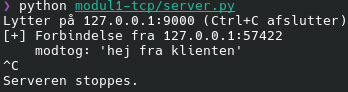
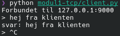
De første tre pakker i capturen er TCP’s three-way handshake:
| # | Retning | Flag | Seq / Ack | Betydning |
|---|---|---|---|---|
| 1 | klient → server (57422 → 9000) |
SYN |
Seq=0 |
Klienten beder om en forbindelse og foreslår sine indstillinger (MSS, WS, SACK_PERM, tidsstempler). |
| 2 | server → klient (9000 → 57422) |
SYN, ACK |
Seq=0 Ack=1 |
Serveren accepterer, bekræfter klientens SYN (Ack=1) og
sender sine egne indstillinger. |
| 3 | klient → server | ACK |
Seq=1 Ack=1 |
Klienten bekræfter serverens SYN. Forbindelsen er etableret. |
Vinduesstørrelsen (Win) er 65495 i
SYN-pakken og 65536 i den afsluttende ACK. Forskellen
skyldes, at WS=1024 først træder i kraft, efter
SYN-pakkerne er udvekslet (se afsnittet om indstillinger ovenfor).
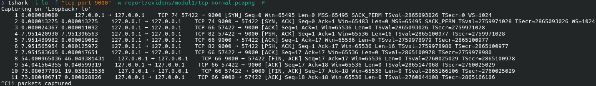
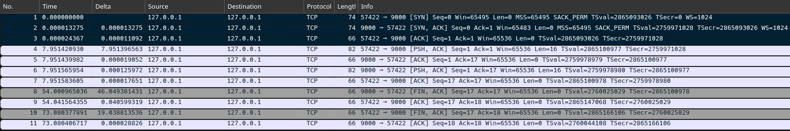
Pakke 4-7 er selve echo-udvekslingen. Beskeden
hej fra klienten er 16 bytes:
| # | Retning | Flag | Len | Betydning |
|---|---|---|---|---|
| 4 | klient → server | PSH, ACK |
16 | Klienten sender beskeden. |
| 5 | server → klient | ACK |
0 | Serveren bekræfter modtagelsen (Ack=17, altså 16 bytes
efter Seq=1). |
| 6 | server → klient | PSH, ACK |
16 | Serveren sender ekkoet. |
| 7 | klient → server | ACK |
0 | Klienten bekræfter ekkoet. |
Pausen på cirka otte sekunder mellem pakke 3 og 4 er den tid, det tog
at skrive beskeden. TCP bekræfter hver modtaget datamængde med et
ACK, og det er denne bekræftelse, der gør TCP
pålideligt.
FIN
(opgave 2)I denne kørsel blev serveren lukket først (Ctrl+C,
mens klienten stadig var åben). Derfor sender serveren den første
FIN:
| # | Retning | Flag | Seq / Ack | Betydning |
|---|---|---|---|---|
| 8 | server → klient | FIN, ACK |
Seq=17 Ack=17 |
Serveren har ikke mere at sende og lukker sin side. |
| 9 | klient → server | ACK |
Seq=17 Ack=18 |
Klienten bekræfter. Ack=18, fordi en FIN
tæller som ét sekvensnummer. |
| 10 | klient → server | FIN, ACK |
Seq=17 Ack=18 |
Cirka 19 sekunder senere lukker klienten (Ctrl+C) sin side. |
| 11 | server → klient | ACK |
Seq=18 Ack=18 |
Serveren bekræfter. Forbindelsen er helt lukket. |
Afslutningen er altså fire pakker (FIN,
ACK, FIN, ACK), fordi hver
retning lukkes for sig. Mellem pakke 9 og 10 er forbindelsen
halvt lukket: serveren er færdig med at sende, men
klienten kan i princippet stadig sende. Bekræftelsen i pakke 9 kommer
cirka 40 ms efter FIN’en, hvilket ligner Linux’ forsinkede bekræftelser
(delayed ACK), hvor modtageren venter kort for at se, om den
selv har noget at sende med.
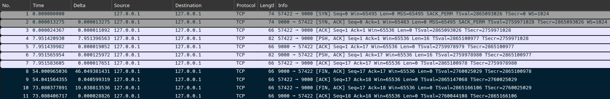
RSTI den anden kørsel blev serveren igen lukket først, men denne gang
skrev jeg en ny besked i den stadig åbne klient
(er du der?):
| # | Retning | Flag | Len | Betydning |
|---|---|---|---|---|
| 8 | server → klient | FIN, ACK |
0 | Serveren lukker sin side. |
| 9 | klient → server | ACK |
0 | Klienten bekræfter. |
| 10 | klient → server | PSH, ACK |
10 | Klienten sender data ind i en forbindelse, serveren har lukket. |
| 11 | server → klient | RST |
0 | Serveren afviser og afbryder forbindelsen.
Seq=18 Win=0. |
Forskellen på de to måder at slutte på er, at FIN er en
høflig lukning, hvor begge sider aftaler det, mens
RST er en brat afbrydelse. Her opstår den, fordi
serveren har kaldt close() og ikke længere kan aflevere
data til noget program. Data, der ankommer efter close(),
besvares derfor med RST. Pakken har intet
ACK-flag, og dens Seq=18 svarer til det
Ack-nummer, klienten sidst sendte. Klienten viser en tom
svar:, fordi recv() returnerer tom bytes, når
den anden side har lukket (den modtog serverens FIN i pakke
8), og ikke en fejl.
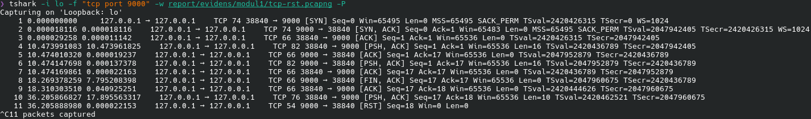
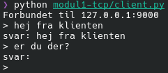
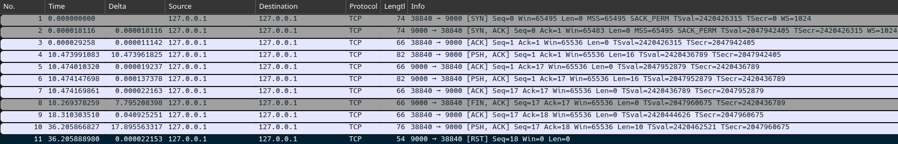
ss (opgave 4)Kommandoerne er kørt i en tredje terminal under den normale kørsel
(samme forbindelse som i capturen ovenfor, klientport
57422), og outputtet er gemt med tee.
ss (socket statistics) viser maskinens sockets.
Flagene bestemmer, hvilke der vises, og hvordan:
| Flag | Betydning |
|---|---|
-t |
Kun TCP-sockets. |
-n |
Numerisk visning: portnumre og adresser vises som tal
(9000) i stedet for at blive slået op som navne. Det er
hurtigere og viser præcis det, der står i pakkerne. |
-p |
Viser, hvilken proces (navn, pid og fildeskriptor) der ejer socket’en. Kræver, at man ejer processen eller er root. |
-l |
Kun lyttende sockets (listening), altså servere, der venter på forbindelser. |
-a |
Alle sockets, både lyttende og forbundne, uanset tilstand. |
Uden -l og -a viser ss kun
forbundne sockets. Derfor bruges tre kombinationer:
| Kommando | Viser | Bruges til |
|---|---|---|
ss -tnp |
Forbundne TCP-sockets, numerisk, med proces. | At se de to ender af en aktiv forbindelse (ESTAB) og
hvilke processer der ejer dem. |
ss -tlnp |
Kun lyttende TCP-sockets, numerisk, med proces. | At se, hvilken adresse og port serveren lytter på
(LISTEN). |
ss -tan |
Alle TCP-sockets, numerisk, uden proces. | At følge en forbindelses tilstande under lukningen
(FIN-WAIT-2, CLOSE-WAIT,
TIME-WAIT). Processen vises ikke, fordi en lukket
forbindelse ofte ikke længere har en ejer. |
| grep 9000 filtrerer outputtet, så kun linjer med port
9000 vises, og | tee fil viser outputtet og gemmer det
samtidig i en fil.
1. Forbindelsen er åben (efter pakke 7):
$ ss -tnp | grep 9000
ESTAB 0 0 127.0.0.1:57422 127.0.0.1:9000 users:(("python",pid=11849,fd=3))
ESTAB 0 0 127.0.0.1:9000 127.0.0.1:57422 users:(("python",pid=11842,fd=4))Der er to linjer, en for hver ende af den samme forbindelse:
klientens (57422 → 9000) og serverens
(9000 → 57422). -p viser, at de tilhører to
forskellige processer.
2. Serverens lyttende socket:
$ ss -tlnp | grep 9000
LISTEN 0 128 127.0.0.1:9000 0.0.0.0:* users:(("python",pid=11842,fd=3))Lytteadressen er 127.0.0.1 og ikke 0.0.0.0.
Det er beviset for, at serveren kun er tilgængelig fra maskinen
selv.
3. Serveren er lukket, klienten er stadig åben (efter pakke 9):
$ ss -tan | grep 9000
CLOSE-WAIT 1 0 127.0.0.1:57422 127.0.0.1:9000
FIN-WAIT-2 0 0 127.0.0.1:9000 127.0.0.1:574224. Begge sider er lukket (efter pakke 11):
$ ss -tan | grep 9000
TIME-WAIT 0 0 127.0.0.1:9000 127.0.0.1:57422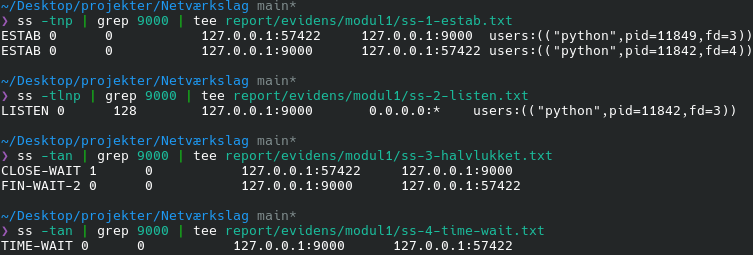
| Tilstand | Betydning | Set efter |
|---|---|---|
LISTEN |
Serveren venter på forbindelser. | Serveren er startet |
ESTAB |
Forbindelsen er etableret, data kan sendes. | Pakke 3 (handshake færdig) |
FIN-WAIT-2 |
Serveren har sendt FIN og fået den bekræftet. Den
venter på, at klienten også lukker. |
Pakke 9 |
CLOSE-WAIT |
Klienten har modtaget serverens FIN, men har endnu ikke
selv lukket. Recv-Q 1 skyldes formentlig den modtagne
FIN, som klienten endnu ikke har læst. |
Pakke 9 |
TIME-WAIT |
Den side, der lukkede først (her serveren), holder forbindelsen i live i et stykke tid efter afslutningen (på Linux 60 sekunder), så sene pakker fra den gamle forbindelse ikke forveksles med en ny. | Pakke 11 |
Bemærk, at TIME-WAIT opstår hos den, der lukker først.
Her var det serveren, og det er samme mekanisme, der gør
SO_REUSEADDR nødvendig i server.py.
| Egenskab | TCP | UDP |
|---|---|---|
| Forbindelse | Forbindelsesorienteret: handshake før data (pakke 1-3 ovenfor). | Forbindelsesløs: pakker sendes uden forudgående opsætning. |
| Pålidelighed | Alt bekræftes med ACK. Tabte pakker gensendes. |
Ingen garantier: pakker kan gå tabt eller komme dobbelt. |
| Rækkefølge | Data leveres i den rækkefølge, de blev sendt. | Ingen garanti for rækkefølgen. |
| Overhead | Højere (handshake, bekræftelser, tilstand hos begge parter). | Lav. |
| Typiske brugsområder | Web, e-mail, SSH, filoverførsel. | DNS-opslag, streaming, spil, VoIP. |
Hvorfor er HTTP bygget oven på TCP? En webside, der kommer halvt eller i forkert rækkefølge, er ubrugelig. HTTP har brug for, at alle bytes ankommer, hele og i orden, og det sørger TCP for (bekræftelser, gensendelse og rækkefølge). Med UDP skulle hvert program selv genopfinde det.
Modeksemplet er DNS (modul 2): et opslag er en lille forespørgsel og et lille svar, så en handshake ville koste mere end selve opslaget. Går svaret tabt, spørger klienten bare igen. Derfor bruger DNS som udgangspunkt UDP.
Modulet viser, at TCP’s forbindelsesopbygning og -afslutning er
synlig og målbar, og at forbindelsestilstandene i ss kan
følges pakke for pakke i Wireshark: ESTAB efter handshaken,
FIN-WAIT-2/CLOSE-WAIT efter den første
FIN, og TIME-WAIT hos den, der lukkede først.
Det overraskede mig, at en almindelig lukning tager fire pakker, og at
forbindelsen kan være halvt lukket i et stykke tid. Det er også
tydeligt, at en RST opstår helt naturligt, når en klient
skriver til en forbindelse, den anden side allerede har lukket, og at en
RST derfor ikke i sig selv er tegn på et angreb.
Med hensyn til sikkerhed peger modulet på to ting. For det første er
TIME-WAIT hos serveren en konsekvens af, at serveren lukker
først. En tjeneste, der lukker mange forbindelser, kommer til at holde
mange sockets i den tilstand. For det andet afhænger både firewalls og
angreb som SYN-flood af den handshake og de tilstande, der her er
observeret. At serveren bindes til 127.0.0.1 og ikke
0.0.0.0 er en billig måde at reducere eksponeringen på fra
start.
En forbedring, jeg ikke har lavet, er at få client.py
til at skrive “serveren har lukket forbindelsen”, når
recv() returnerer tom bytes. Nu ser en lukket forbindelse
ud som en tom svar:, hvilket er let at misforstå.
At forstå og selv kunne udføre navneopløsning ved at bygge en DNS-forespørgsel som rå bytes, sende den over UDP og læse svaret. Desuden at konfigurere lokal navneopløsning til et selvvalgt domænenavn.
Scriptet modul2-dns/dns_lookup.py
bygger selv forespørgslen og læser svaret med Pythons
socket- og struct-moduler. Der bruges ingen
DNS-biblioteker.
| Valg | Begrundelse |
|---|---|
UDP (SOCK_DGRAM) på port 53 |
DNS-opslag er små og består af én forespørgsel og ét svar, så en TCP-handshake ville koste mere end selve opslaget. Går et svar tabt, spørger klienten bare igen. |
| Transaktions-ID valgt tilfældigt (2 byte) | Bruges til at genkende vores eget svar. |
Kun flaget RD (recursion desired) sat |
Vi beder resolveren om selv at finde svaret. |
struct.pack("!HHHHHH", …) |
! er netværks-byterækkefølge (big-endian),
H er 2 byte. |
| Svar accepteres kun fra den resolver, vi spurgte, med det ID, vi sendte | UDP har ingen forbindelse, så hvem som helst kan sende en pakke til socket’en. Ellers kunne et forfalsket svar overtage. |
| Pointer-komprimering understøttes, med en grænse for antal hop | Se nedenfor. Grænsen forhindrer, at en ødelagt eller ondsindet pakke sender scriptet i en uendelig løkke. |
| Længder og grænser kontrolleres ved parsing | En afkortet eller misdannet pakke giver en fejlmeddelelse i stedet for et nedbrud. |
Automatisk skift til TCP ved TC=1 |
Se afsnittet om TXT. |
Scriptet understøtter recordtyperne A,
AAAA, NS, CNAME, MX,
TXT og SOA.
En DNS-pakke består af en header på 12 byte efterfulgt af sektioner. Forespørgslen er header og spørgsmål. Svaret gentager spørgsmålet og tilføjer svar-records.
Header (12 byte):
| Felt | Størrelse | Betydning |
|---|---|---|
| Transaktions-ID | 2 byte | Parrer svar med forespørgsel. |
| Flags | 2 byte | QR (0 = forespørgsel, 1 = svar), RD,
RA, TC, AA og RCODE
(statuskode). |
| Antal spørgsmål | 2 byte | I vores forespørgsel: 1. |
| Antal svar | 2 byte | 0 i en forespørgsel. |
| Antal authority- og additional-records | 2 + 2 byte | 0 i en forespørgsel. |
Spørgsmål: domænenavnet, en type (2 byte) og en
klasse (2 byte, IN = 1).
Domænenavnet er kodet som en række labels, hvor hver label
har et længde-byte foran, og hele navnet afsluttes med en nul-byte.
github.com bliver til
06 "github" 03 "com" 00.
Pointer-komprimering: navne i svaret bruger ofte en
pointer i stedet for at gentage hele navnet. Når de to øverste
bit i et længde-byte er 11, er de resterende 14 bit en
position i pakken, hvor navnet allerede står. Så fylder
github.com to bytes i stedet for tolv.
De samlede tekstoutputs og capturen ligger i report/evidens/modul2/.
Kørt med -v, som viser pakkerne som hexadecimale
bytes:
$ python3 modul2-dns/dns_lookup.py github.com A -v
Spørger 8.8.8.8:53 om github.com (A)
Transaktions-ID: 0x072e
Forespørgsel (28 bytes): 07 2e 01 00 00 01 00 00 00 00 00 00 06 67 69 74 68 75 62 03 63 6f 6d 00 00 01 00 01
Svar (44 bytes): 07 2e 81 80 00 01 00 01 00 00 00 00 06 67 69 74 68 75 62 03 63 6f 6d 00 00 01 00 01 c0 0c 00 01 00 01 00 00 00 3c 00 04 8c 52 79 03
Transport: UDP
Flags: QR=1 AA=0 TC=0 RD=1 RA=1 RCODE=NOERROR
Spørgsmål: 1 Svar: 1 Authority: 0 Additional: 0
Svar:
github.com TTL 60 A 140.82.121.3Forespørgslen (28 byte):
| Bytes | Felt | Betydning |
|---|---|---|
07 2e |
Transaktions-ID | 0x072e |
01 00 |
Flags | Kun RD er sat |
00 01 |
Spørgsmål | 1 |
00 00 00 00 00 00 |
Svar, authority, additional | 0 |
06 67 69 74 68 75 62 |
Label | længde 6, derefter github |
03 63 6f 6d |
Label | længde 3, derefter com |
00 |
Nul-byte | Navnet er slut |
00 01 |
Type | A |
00 01 |
Klasse | IN |
Svaret (44 byte). De første 28 byte er et ekko af
forespørgslen, med to ændringer: flags er nu 81 80
(QR=1, RD=1, RA=1, ingen fejl) og
antallet af svar er 00 01. Derefter følger selve
svar-recorden på 16 byte:
| Bytes | Felt | Betydning |
|---|---|---|
c0 0c |
Navn | Pointer til position 12, hvor
github.com står i spørgsmålet |
00 01 |
Type | A |
00 01 |
Klasse | IN |
00 00 00 3c |
TTL | 0x3c = 60 sekunder |
00 04 |
Længde | 4 byte data |
8c 52 79 03 |
Adresse | 140.82.121.3 (0x8c = 140, 0x52 = 82,
0x79 = 121, 0x03 = 3) |
Alle fem recordtyper er slået op for github.com mod
resolveren 8.8.8.8:
| Type | Opslag | Svar | Formål |
|---|---|---|---|
A |
github.com |
140.82.121.3 (TTL 60) |
Oversætter et navn til en IPv4-adresse. Det er den, en browser bruger til at finde serveren. |
CNAME |
www.github.com |
github.com (TTL 3591) |
Et alias: www peger på et andet navn,
og opslaget fortsætter dér. |
MX |
github.com |
0 github-com.mail.protection.outlook.com (TTL 5) |
Peger på domænets mailserver. Tallet er præferencen (lavest først). Recorden peger på et navn, ikke en IP, så afsenderen slår også dette navn op. |
TXT |
github.com |
24 records, bl.a. SPF og verificeringstekster | Frit tekstindhold. Bruges til bl.a. SPF (hvilke servere må sende mail for domænet) og til at bevise ejerskab over for tjenester. |
NS |
github.com |
8 nameservere (AWS Route 53 og NS1), TTL 2425 | Angiver, hvilke servere der er autoritative for domænet, altså har det endelige svar. |
Uddrag af output for de enkelte typer:
$ python3 modul2-dns/dns_lookup.py www.github.com CNAME
www.github.com TTL 3591 CNAME github.com
$ python3 modul2-dns/dns_lookup.py github.com MX
github.com TTL 5 MX 0 github-com.mail.protection.outlook.com
$ python3 modul2-dns/dns_lookup.py github.com NS
github.com TTL 2425 NS ns-1283.awsdns-32.org
github.com TTL 2425 NS dns3.p08.nsone.net
... (8 nameservere i alt)Et opslag på www.github.com med type A
returnerer både aliaset og adressen i samme svar:
www.github.com TTL 3598 CNAME github.com
github.com TTL 60 A 140.82.121.4Om TTL. Time to live er det antal sekunder,
et svar må gemmes i cache. De viste værdier er derfor ikke faste. En
resolver tæller ned, mens den har svaret gemt, så samme opslag giver
forskellige TTL’er afhængigt af, hvornår man spørger (fx MX
med TTL 258 ved ét opslag og 5 ved et senere). Forskellene mellem
typerne er en pointe i sig selv: A-recorden har en kort TTL
(60 s), så adressen hurtigt kan skiftes, mens CNAME og
NS, som sjældent ændres, har en langt længere. Adressen for
github.com varierer også (her .3 og
.4), fordi GitHub bruger flere adresser.
TXT:
UDP-svaret er for stort, og der skiftes til TCPgithub.com har så mange TXT-records, at
svaret ikke kan være i ét UDP-svar. Resolveren sætter flaget
TC (truncated) og sender ingen records med. Det
viser scriptet, når TCP-skiftet slås fra:
$ python3 modul2-dns/dns_lookup.py github.com TXT --udp-only
Flags: QR=1 AA=0 TC=1 RD=1 RA=1 RCODE=NOERROR
Spørgsmål: 1 Svar: 0 Authority: 0 Additional: 0
[!] Svaret er afkortet (TC=1), og TCP-fallback er slået fra (--udp-only).
Ingen svar-records.Uden --udp-only gentager scriptet forespørgslen over
TCP, hvor der ikke er en størrelsesgrænse. Over TCP sættes en 2-byte
længde foran pakken, fordi TCP er en byte-strøm uden beskedgrænser
(samme pointe som i modul 1). Resultatet er 24 records:
$ python3 modul2-dns/dns_lookup.py github.com TXT
[!] Svaret er afkortet (TC=1). Gentager forespørgslen over TCP.
Transport: TCP
Svar: 24
github.com TTL 82 TXT "google-site-verification=82Le34Flgtd15ojYhHlGF_6g72muSjamlMVThBOJpks"
...
github.com TTL 82 TXT "v=spf1 ip4:192.30.252.0/22 include:spf.protection.outlook.com ...
include:sendgrid.net ip4:62.253.2" "27.114 ip4:166.78.69.169 ... ~all"SPF-recorden er delt i to citerede strenge
("…ip4:62.253.2" "27.114 …"). En enkelt streng i en
TXT-record kan højst være 255 byte, så længere værdier
deles op. Scriptet læser strengene som længde-præfikserede blokke og
viser dem samlet. Rækkefølgen af records varierer mellem opslag, da DNS
ikke garanterer en rækkefølge. Kun et uddrag er vist her, da de 24
records mest er verificeringstokens fra tredjepartstjenester.
Domænenavnet network.test er sat til at pege på loopback
ved at tilføje en linje til /etc/hosts (kræver
sudo):
$ echo '127.0.0.1 network.test' | sudo tee -a /etc/hosts
127.0.0.1 network.testTopdomænet .test er reserveret til test og findes aldrig
på det rigtige internet, så navnet kan ikke komme i konflikt med et
rigtigt domæne. Screenshottet viser fire kommandoer:
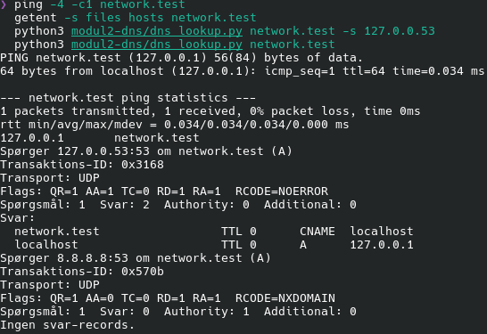
| Kommando | Resultat | Betydning |
|---|---|---|
ping -4 -c1 network.test |
Svar fra 127.0.0.1 |
Navnet løses til loopback. |
getent -s files hosts network.test |
127.0.0.1 network.test |
Kun /etc/hosts kender navnet direkte. |
dns_lookup.py network.test -s 127.0.0.53 |
CNAME localhost, A 127.0.0.1,
AA=1 |
Den lokale resolver (systemd-resolved) svarer selv, ud
fra hosts-filen. |
dns_lookup.py network.test (mod
8.8.8.8) |
NXDOMAIN |
Det offentlige DNS kender ikke navnet. |
De to sidste linjer er beviset for, at opløsningen kun findes lokalt: samme navn, to resolvere, to forskellige svar.
To observationer om, hvordan systemd-resolved opfører
sig:
AA=1 (authoritative answer) betyder, at
resolveren besvarer opslaget selv og ikke spørger videre. Den læser
altså /etc/hosts og præsenterer indholdet som DNS-svar, så
et DNS-værktøj som dig og mit script kan slå navnet op. Det
fungerer derfor også over UDP på 127.0.0.53.network.test CNAME localhost, ikke en direkte
A-record. Resolveren ser ud til at samle poster med samme
IP-adresse, så localhost (som står først i hosts-filen)
bliver det egentlige navn, og network.test bliver et alias.
En konsekvens er, at et almindeligt ping uden
-4 svarer fra ::1 (IPv6), fordi
localhost også har en IPv6-adresse. Derfor er
ping -4 brugt ovenfor, så svaret kommer fra
127.0.0.1, som opgaven forudsætter.Et opslag af github.com mod den eksterne resolver
8.8.8.8 er fanget på wlan0 med et
capture-filter, så filen kun indeholder DNS-trafik til
8.8.8.8:
tshark -i wlan0 -f "udp port 53 and host 8.8.8.8" -w report/evidens/modul2/dns-github.pcapng -PCapturen indeholder to pakker: en forespørgsel og et svar.
| # | Retning | Indhold |
|---|---|---|
| 1 | 192.168.20.194:43799 → 8.8.8.8:53 |
Query: github.com, type
A, transaktions-ID 0x445c |
| 2 | 8.8.8.8:53 → 192.168.20.194:43799 |
Response: github.com → 140.82.121.4,
TTL 60, samme transaktions-ID 0x445c |
Screenshottene er taget i Wireshark. Felterne er markeret med røde rammer, som er tegnet ovenpå billederne bagefter, fordi Wireshark kun kan fremhæve ét felt ad gangen. MAC-adresserne på Ethernet-linjen er skjult.
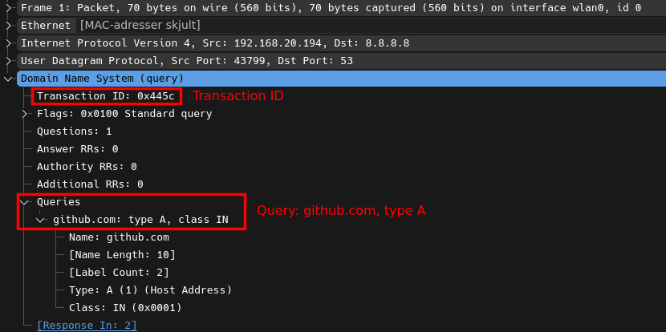
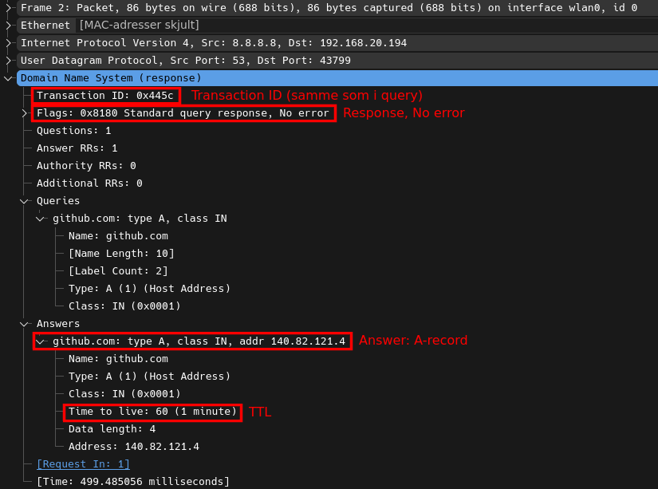
Transaktions-ID’et 0x445c er ens i forespørgsel og svar,
og det er det, der parrer dem. Svaret kommer fra port 53 til den
tilfældige kildeport 43799, som operativsystemet valgte til
forespørgslen. Wireshark viser, at svaret ankom cirka 0,5 sekund efter
forespørgslen.
TXT og tunneling.
TXT-records kan rumme vilkårlig tekst, og DNS-trafik
inspiceres sjældent nøje. Det er en grund til, at DNS bruges til at
smugle data ind og ud.Modulet viser, at DNS ikke er magi: et opslag er en lille,
veldefineret binær pakke, og den kan bygges og læses med få linjer kode.
Det, jeg fandt mest læreværdigt, var
pointer-komprimeringen (c0 0c), som ikke
er nævnt i mange oversigter, men som er nødvendig for at læse ethvert
svar med flere records, og at et svar kan være afkortet
og kræve et skift fra UDP til TCP. Det forbinder modul 1 og 2.
At læse svaret i Wireshark og i de rå bytes gjorde det tydeligt, at
TTL er cachens levetid og ikke en fast egenskab ved en
record, og at A, CNAME, MX,
TXT og NS har hver deres rolle. Den lokale
navneopløsning viste, at /etc/hosts overstyrer det
offentlige DNS, og at systemd-resolved gør hosts-filen
synlig som rigtige DNS-svar. Det er praktisk til test, men det er også
en påmindelse om, hvor let navneopløsning kan omdirigeres på en maskine
med lokale rettigheder.
Linjen 127.0.0.1 network.test i /etc/hosts
er en ændring af systemet uden for projektet og skal fjernes, når
opgaven er afleveret:
sudo sed -i '/network.test/d' /etc/hosts